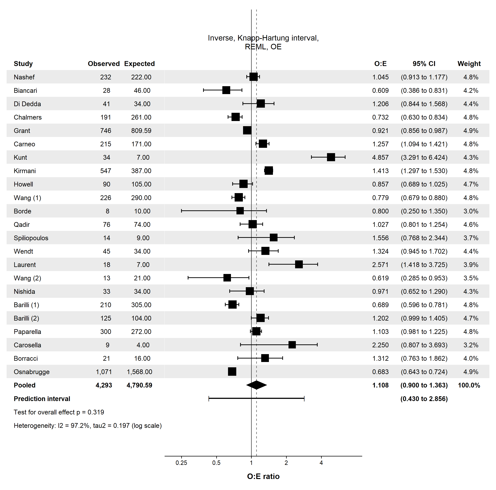
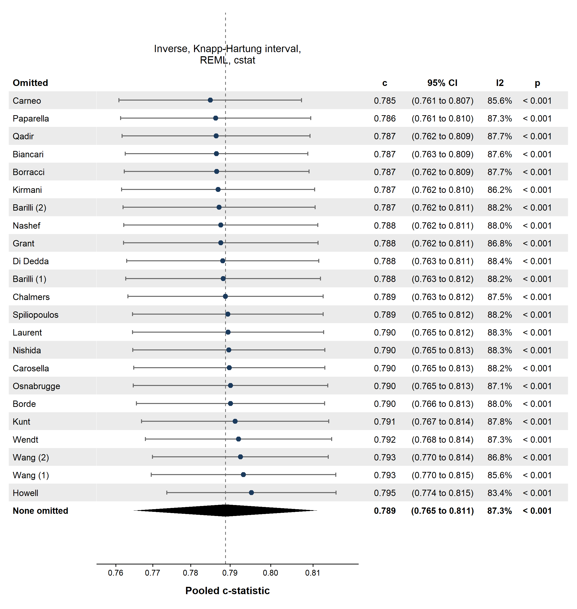
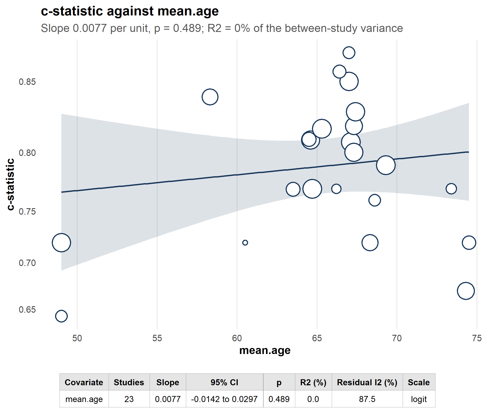
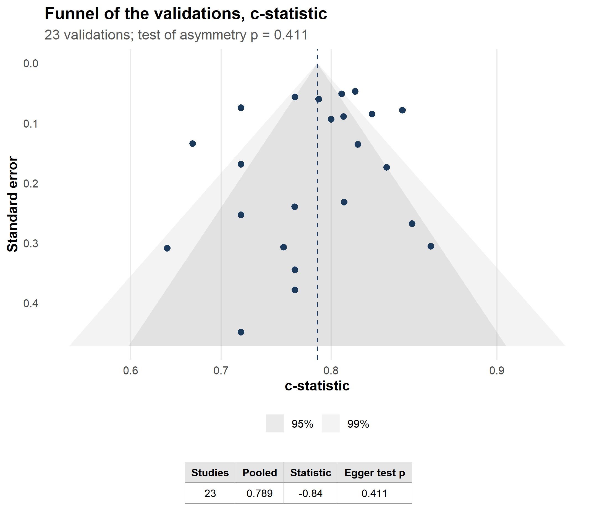

Every one of them takes the fitted object and nothing else

easypr.object.oe <- easypr(EuroSCORE, sm = "OE") easypr_forest(easypr.object.oe)
One is perfect agreement. Below one the model over-predicts, above one it under-predicts.
easypr_loo(easypr.object.cstat)
Every row is one analysis rather than one study, so it carries that analysis's own pooled estimate, interval, heterogeneity and test. Sorted, so the study carrying the result is at one end.
On these 23 validations the pooled c-statistic runs from 0.785 to 0.795, against 0.789 with everything in. Nothing is carrying it, and that is the finding to report.



Heterogeneity in a prognostic review is usually the interesting part rather than a nuisance: the model is being validated in different places on different patients. On these validations mean age explains none of it, and that is reported rather than replaced with a covariate that works.